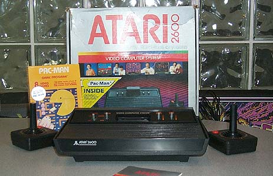

The original Atari 2600 is referred to as "The Heavy Sixer" due to its heavy weight and its 6 selection switches on the front of the console. An interesting note about the Atari 2600 and 2600A is that about 75% of the console case is EMPTY. The motherboard of the Atari 2600 is a rather small and simple design. Most of the interior of the case is empty. The original Atari 2600 had a much thicker plastic case and the shielding was also quite thick as well. On the newer Atari 2600a the first run of the consoles came in the standard Atari 2600 woodgrain look and the older, original black box. On the later run of Atari 2600a's Atari did away with the 70's woodgrain look and went for an all black look and also packaged the Atari 2600a's into the standardized Silver with Red packaging. Since the difficulty switches which weren't used as often , they were placed on the back side of the console. The Channel selector which was on the bottom of the case had also been moved to the rear of the case. Only the Power, Color/B&W, Game Select and Reset switches remained in front. Also the depth of the cartridge interface was not as deep as the oiginal Atari 2600 console. Also as shown in the above picture, Atari began to package Atari 2600 Pac Man (CX2646) with the Atari 2600a's instead of Combat.